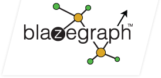

Welcome to Blazegraph
Blazegraph™ DB is a ultra high-performance graph database supporting Blueprints and RDF/SPARQL APIs. It supports up to 50 Billion edges on a single machine. It is in production use for Fortune 500 customers such as EMC, Autodesk, and many others. It is supporting key Precision Medicine applications and has wide-spread usage for life science applications. It is used extensively to support Cyber analytics in commercial and government applications. It powers the Wikimedia Foundation's Wikidata Query Service.

Blazegraph Javadocs
- Blazegraph Database: API Javadocs
- Blazegraph Tinkerpop3: API Javadocs
- BlazegraphBasedTPFServer: API Javadocs
- Blazegraph Samples: API Javadocs
Blazegraph Repositories and Projects
- Blazegraph Database
- Tinkerpop3
- Public Code Samples
- Blazegraph Python Client
- Blazegraph Dot Net RDF Client
Starting points:
- Blazegraph Wiki: https://wiki.blazegraph.com/
- Blazegraph JIRA: https://jira.blazegraph.com/
- Public Code Samples: https://github.com/blazegraph/blazegraph-samples
- Whitepaper: Bigdata Architecture Whitepaper
Download Blazegraph
You can choose an executable jar, war file, or tar.gz distribution.
After you've downloaded it, checkout out our quick start guide and sample applications. Once you've started development, the Blazegraph Community is the best way for us to assist in your design and development. Support is available via the Github Issues and JIRA issue tracker.

Find an issue? Need help? See JIRA